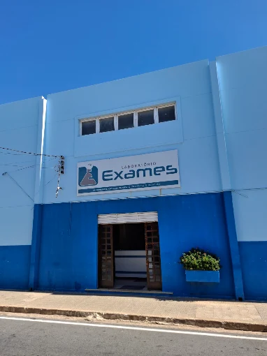
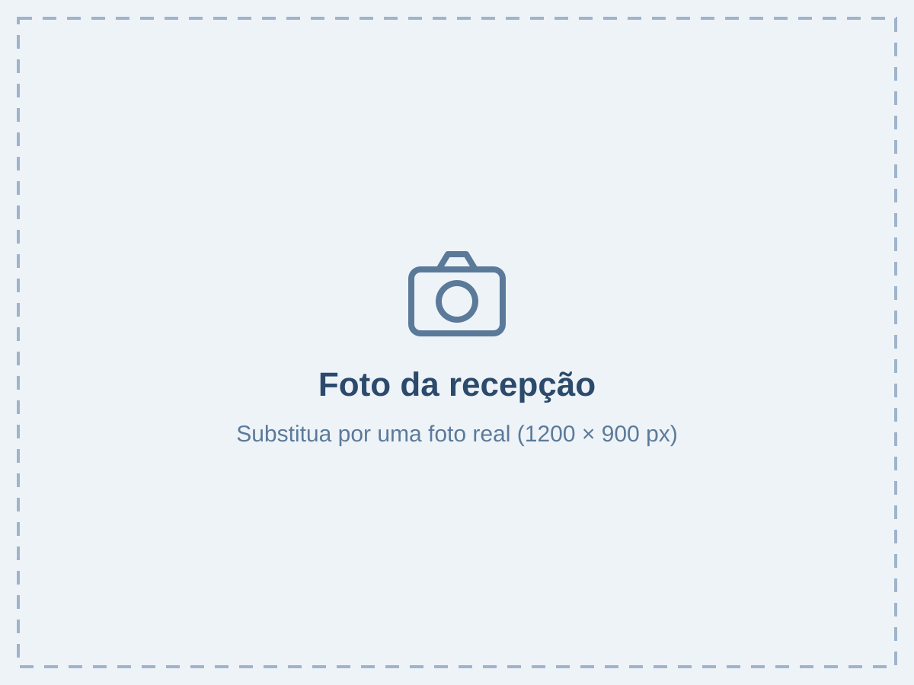
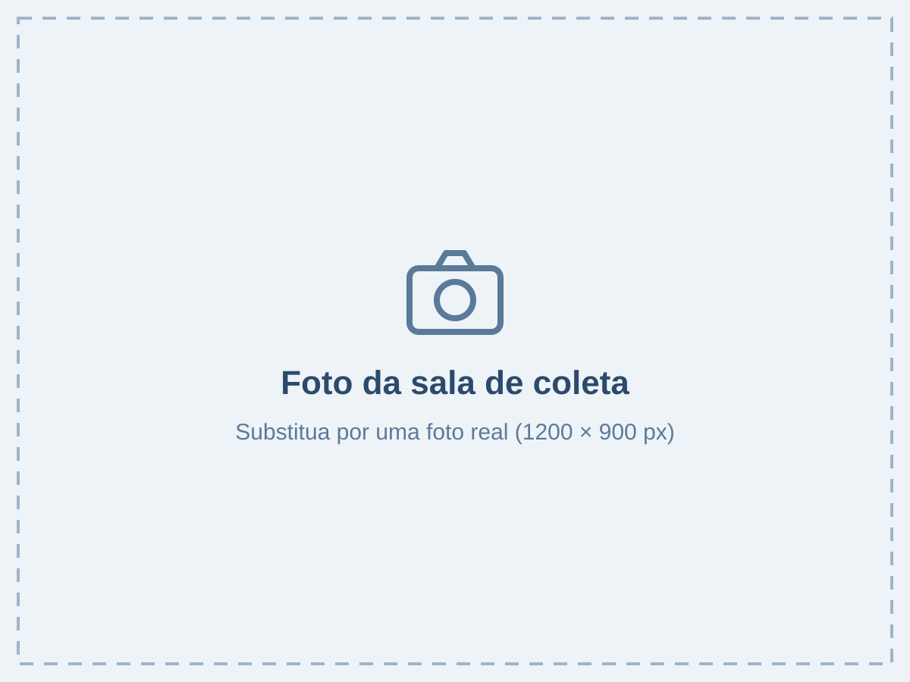
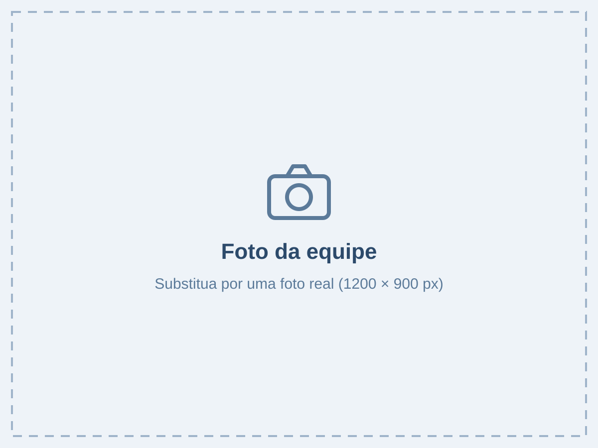

Laboratório Exames: análises clínicas no Centro de Xique-Xique (BA)
Quem somos
O Laboratório Exames atende Xique-Xique e região com análises clínicas para toda a família: bebês, crianças, adultos e idosos.
Por trás de cada exame existe uma pessoa e uma família esperando respostas. É com isso em mente que a nossa equipe atende: com calma, explicando cada etapa e respeitando o seu tempo. Valores, preparo, horários e prazo do resultado são explicados pelo WhatsApp, antes de você sair de casa.
- Atendimento humano, sem robôs nem menus
- Orientação de preparo antes da coleta
- Resultado pelo WhatsApp, em PDF, ou online

Preparo de exames
Escolha o exame e veja como se preparar para a coleta. A nossa equipe confirma tudo pelo WhatsApp.
Não encontrou o seu exame? Envie a foto do pedido médico pelo WhatsApp.
Glicemia em jejum
8 horas de jejum
- Jejum Água é liberada.
- Preparo Mantenha a alimentação habitual no dia anterior.
- Resultado Em 24 horas, pelo WhatsApp ou online.
Orientações a confirmar pela responsável técnica
Confirmar pelo WhatsAppA mensagem já vai com o nome do exame.
Como funciona o atendimento
O atendimento começa no seu WhatsApp. Quando você chega, o essencial já está resolvido.
Chame no WhatsApp
Diga qual exame você precisa. Se quiser, envie a foto do pedido médico.
Receba as orientações
Preparo, valores e horários, direto da nossa equipe.
Venha colher
No horário combinado: seg. a sex., 6h30 às 11h; sáb., 7h às 10h.
Receba o resultado
Pelo WhatsApp, em PDF, ou online com login e senha.
Nossa estrutura e equipe
Um ambiente preparado para atender você e a sua família com cuidado.



Participação em programa de controle de qualidade (ex.: PNCQ) a confirmar
O que dizem nossos pacientes
Depoimentos de exemplo: substituir por relatos reais, com autorização dos pacientes
Levei minha mãe de 78 anos e fomos tratadas com muito carinho. A moça da coleta teve toda a paciência do mundo com ela.
Mandei a foto do pedido no WhatsApp e já me passaram o valor e o preparo. Cheguei no horário e em 10 minutos estava liberado.
Explicaram tudo direitinho, sem enrolação. O resultado saiu no dia seguinte, pelo celular.
Dúvidas frequentes
Se a sua dúvida não estiver aqui, mande uma mensagem. Uma pessoa da equipe responde.
A coleta costuma ser rápida: em média de 10 a 15 minutos. Ao agendar pelo WhatsApp, você já sabe o melhor horário para ser atendido com agilidade.
Para convênios, sim. No particular, muitos exames podem ser feitos sem pedido, mas o acompanhamento do seu médico é sempre recomendado. Se tiver dúvida, envie uma foto do pedido pelo WhatsApp.
Sim, atendemos todas as idades, inclusive bebês. Informe a idade do paciente no contato para receber a orientação certa.
Depende do exame. Veja a seção Preparo de exames nesta página ou pergunte à equipe antes da coleta, para não perder a viagem.
O valor depende do exame. Pergunte pelo WhatsApp antes de vir: você só decide depois de saber quanto vai pagar. Condições para pacotes de check-up a confirmar
Formas de pagamento a confirmar (ex.: Pix, dinheiro, cartão) Convênios aceitos a confirmar Confirme o seu plano pelo WhatsApp antes de sair de casa.
Pelo WhatsApp, em PDF, ou online com login e senha. O prazo de cada exame aparece na seção Preparo de exames.
Política de nova coleta sem custo a confirmar
Nossa equipe esclarece dúvidas sobre o laudo pelo WhatsApp. A interpretação clínica deve ser feita sempre pelo seu médico.
Como chegar
- Endereço
- Rua Coronel Albino, 210 — Centro
Xique-Xique, Bahia
Próximo à Praça da Matriz - Coleta
- Seg. a sex., das 6h30 às 11h
Sáb., das 7h às 10h - (74) 99910-3138
Seg. a sex., das 7h às 17h